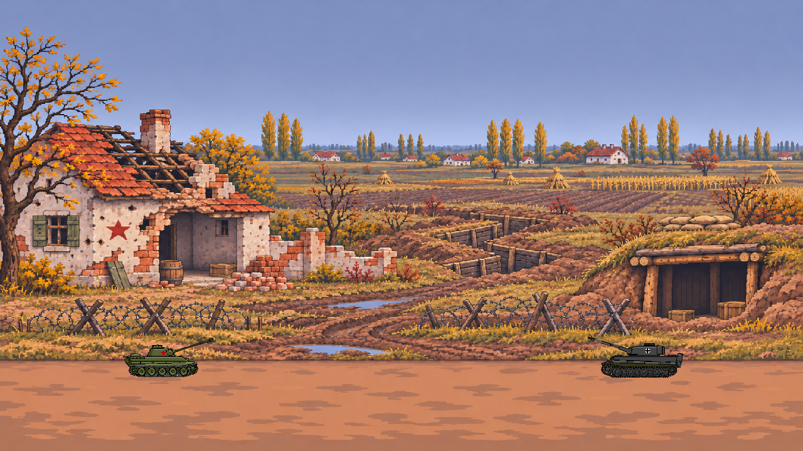
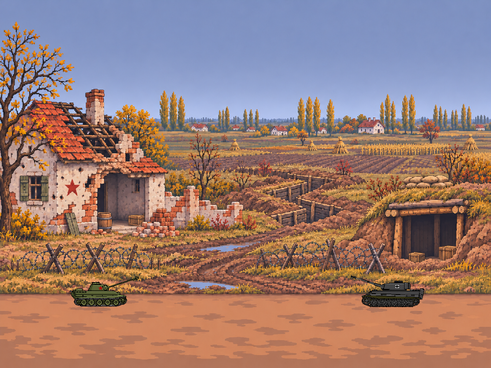
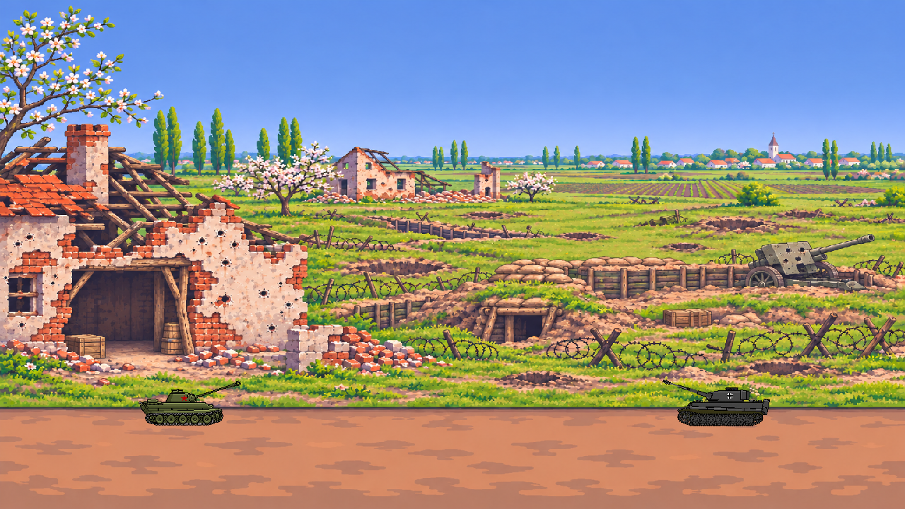
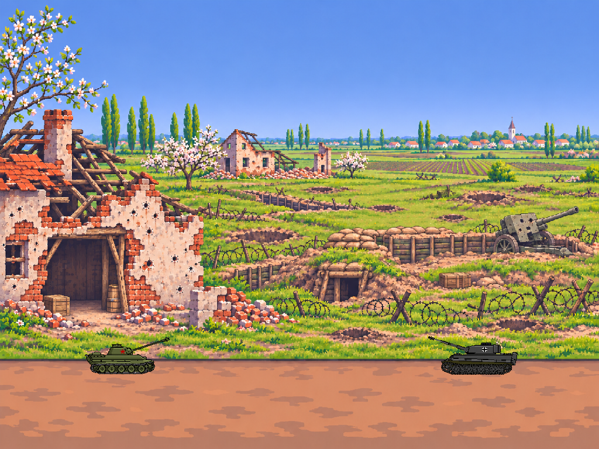
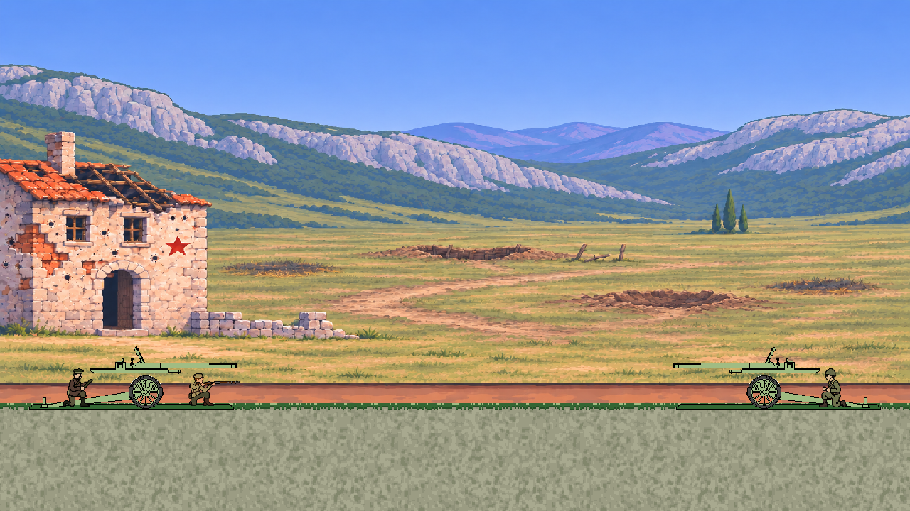
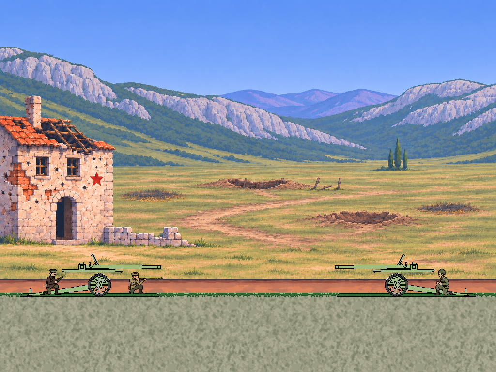
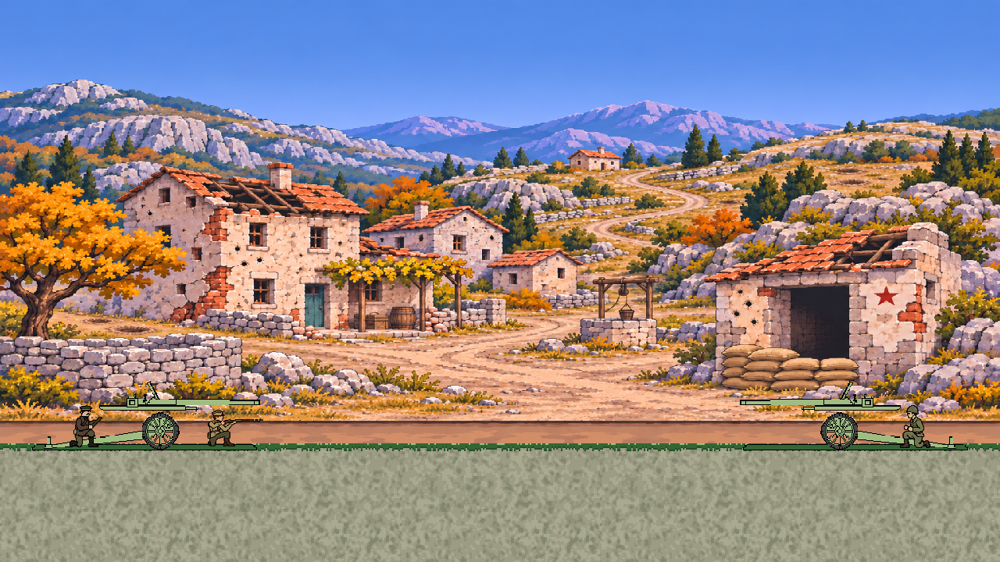
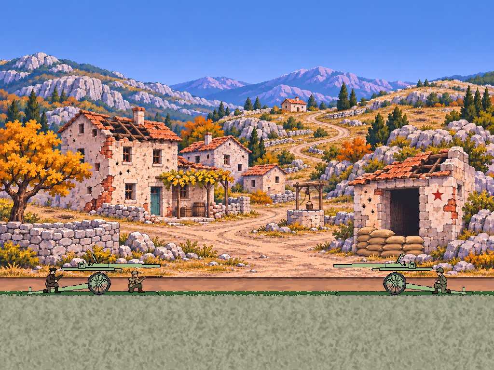
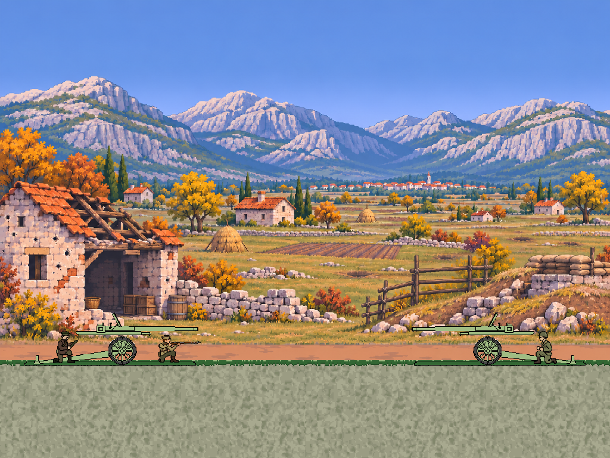

ART-12: six current locations Offline compositions with actual unit art at 1280×720 and 1024×768. Art handoff for Claude; game, browser and live effects were not executed. Unit positioning follows the existing composition study, not a simulation of combat.
Sremski front · jesen 1944 PNG 
current-previews/sremski-front-1944-1280x720.webp 
current-previews/sremski-front-1944-1024x768.webp Batina · novembar 1944 Batina: selected animated background (live layers; no unit-composition still)
Sremski front · proboj 1945 PNG 
current-previews/sremski-front-1945-1280x720.webp 
current-previews/sremski-front-1945-1024x768.webp Grahovo · 1941 PNG 
current-previews/grahovo-1941-1280x720.webp 
current-previews/grahovo-1941-1024x768.webp Vilusi · 1941 PNG 
current-previews/vilusi-1941-1280x720.webp 
current-previews/vilusi-1941-1024x768.webp Okolina Nikšića · 1941 PNG current-previews/niksic-1941-1280x720.webp 
current-previews/niksic-1941-1024x768.webp